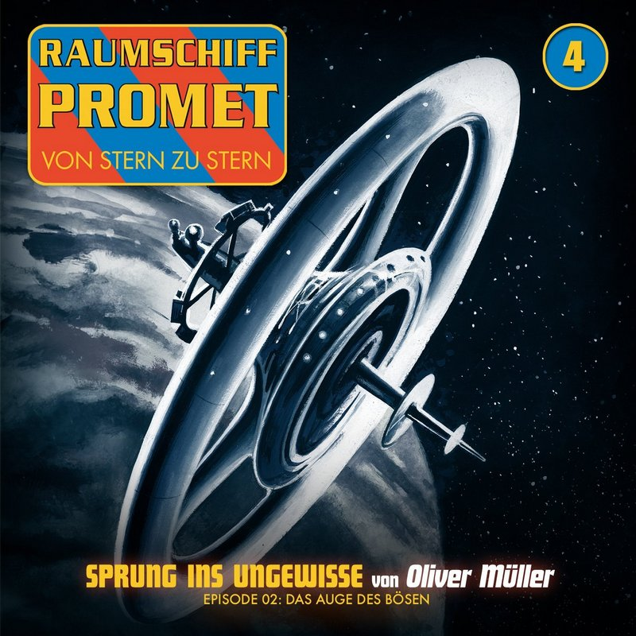

© Winterzeit
Die wohl kultigste deutsche Space Opera mit neuen Texten! Der zweite Teil einer zweiteiligen Folge.
Die Promet mit Peet Orell, Arn Borul, Vivien Raid und Jörn Callaghan befindet sich am Rand unseres Sonnensystems und macht dort eine unglaubliche Entdeckung. Eine fremde Raumstation gewaltigen Ausmaßes türmt sich vor ihnen auf.
Opulent inszenierte Lesung mit Musik und Soundkulisse.
Mit Sascha Rotermund, Corinna Dorenkamp, Manuel Straube, Constantin von Jascheroff, Sven Hasper, Tom Jacobs, Peter Gröger u.v.a.
1 Audio CD